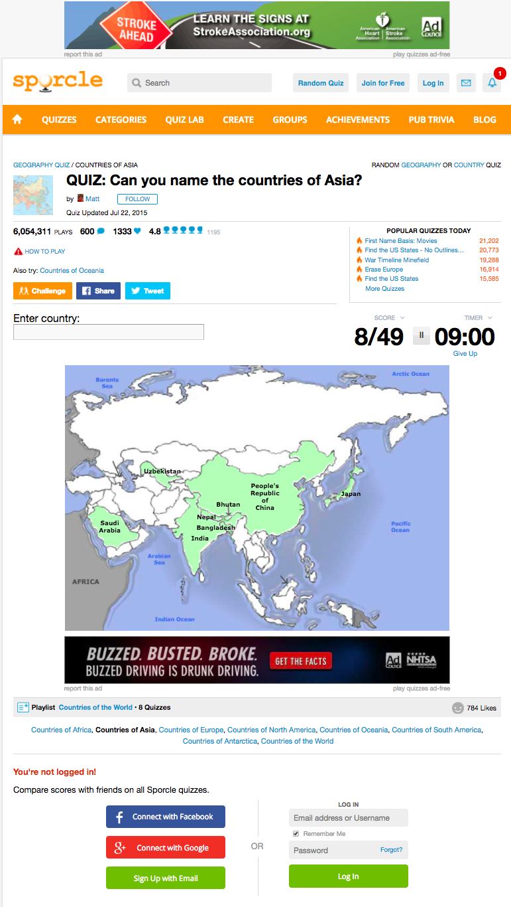
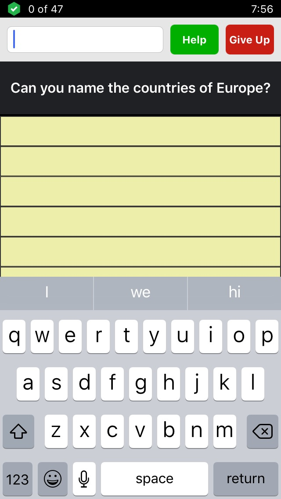
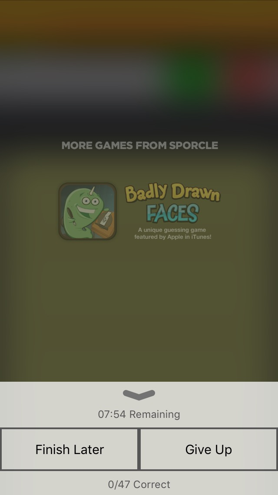
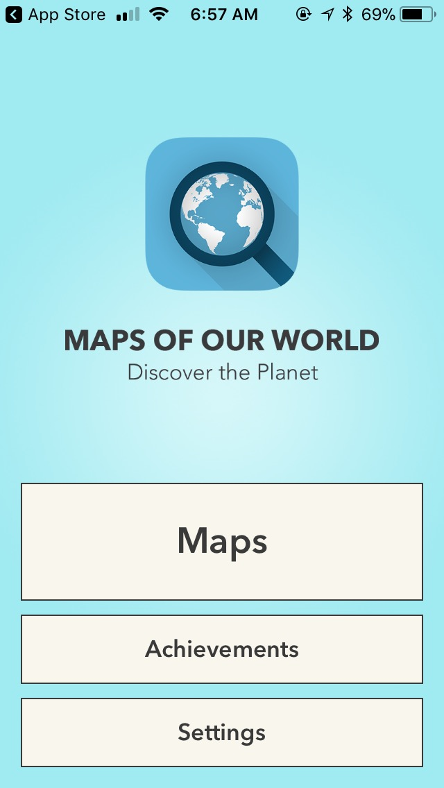
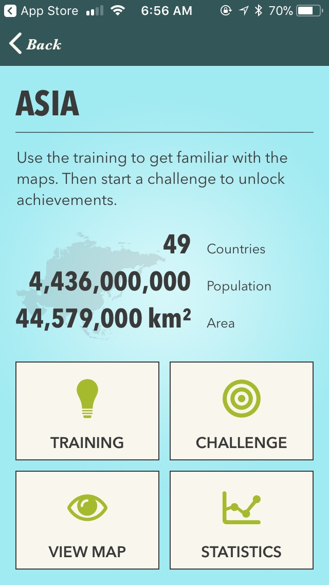
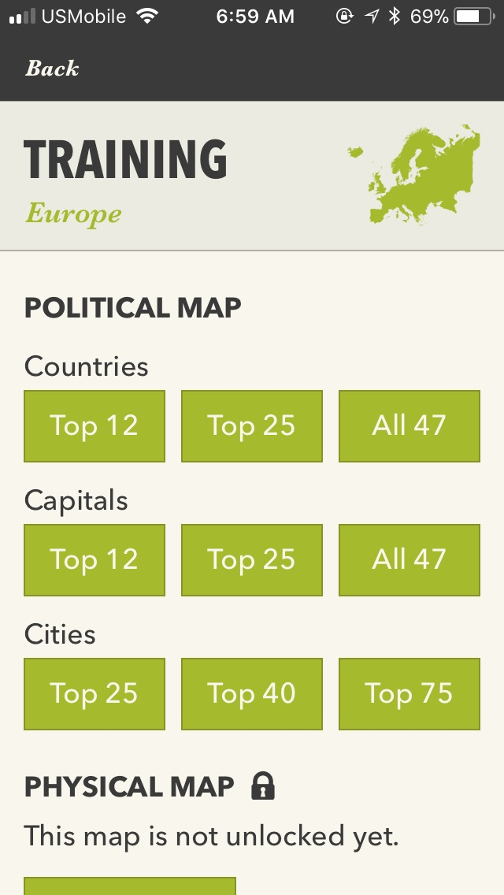
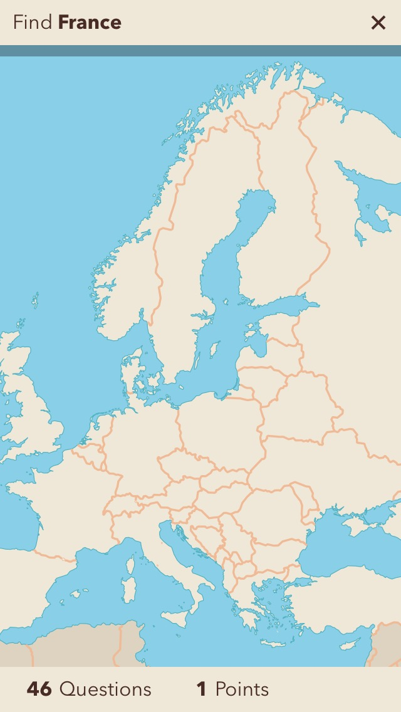
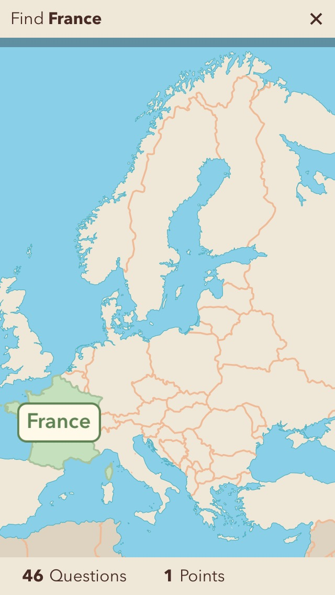

Wanted to be better at knowing the countries of the world and where they are. Extended blurb on why.
Sporkle. What it is.
  Maps of our World has since been made though which I feel come the closest. I like that it does cities too and the interface is nice. I dont like: cant skip and come back later. Pay to remove ads, pay to get more levels, selection does not stay on the map—not have such a sense of achievement going through the countries, nothing to tell me if doing all the countries, they randomly pick and dont do all. Challenge mode mix all up (cities and countries) which is a good challenge—have two lives and timed. Still does not test complete knowledge.
    First app so slow. Finding correct outline of countries—how to pass this into app. How to detect the click. Finding a better map.